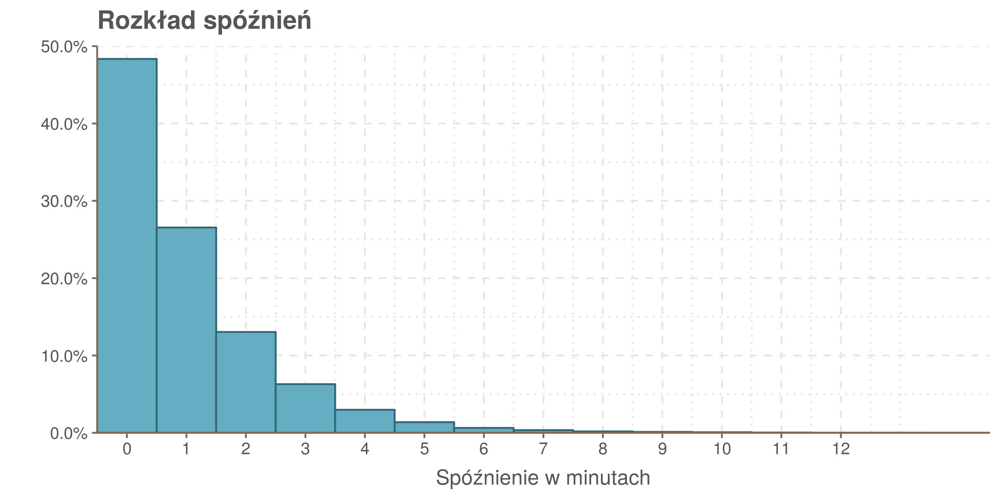
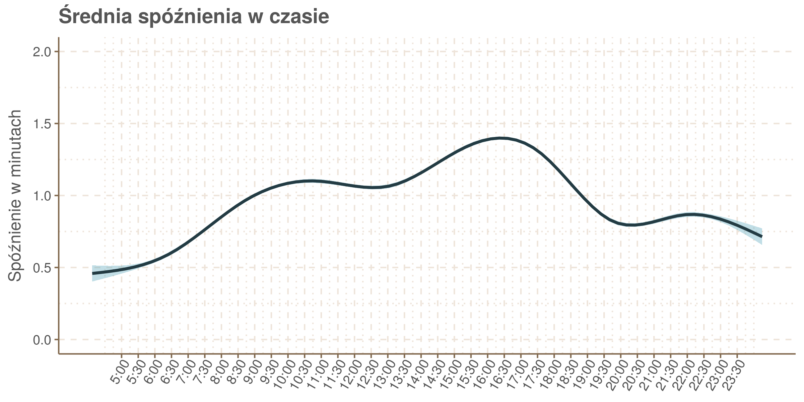
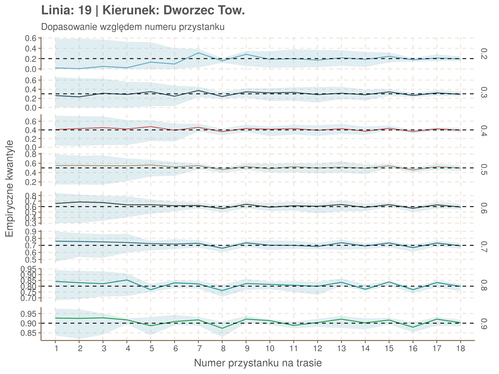

Od pewnego czasu na stronie ttss.krakow.pl możemy podglądać informacje, które na co dzień widzimy w Krakowie na przystankowych tablicach elektronicznych. Prawdziwa zabawa zaczyna się jednak, gdy wejdziemy wgłąb strony TTSS (Traffic Tram Supervision System), na ttss.krakow.pl/internetservice/. Znajdziemy tam serwis w którym można na żywo śledzić położenie tramwajów na mapie, trasy poszczególnych składów, czy przewidywane czasy odjazdów. O stronie zrobiło się głośno, gdy Jacek Kowalski przygotował i udostępnił pro publico bono znacznie wygodniejszą wersję mapki (https://mpk.jacekk.net). Od tego czasu powstało też kilka innych stron i aplikacji oferujących dostęp do serwisu. Natomiast ja postanowiłem pobrać z niego trochę danych i na ich podstawie przeanalizować, jak się spóźniają krakowskie tramwaje.
Fragmenty z szarym tłem będą poświęcone bardziej technicznym tematom.
Żeby wpis był czytelniejszy pomijam fragmenty kodu przy wykresach i obróbce danych. Całość można znaleźć na GitHubie, pod tym linkiemPobieranie i czyszczenie danych
API
Pójdźmy jeszcze bardziej wgłąb strony TTSS. Uruchamiając w przeglądarce narzędzia deweloperskie, można sprawdzić jak działa API serwisu. Najważniejsze ścieżki udostępniają:
geoserviceDispatcher/services/vehicleinfo/vehicles: dane o pojazdach i ich położeniach oraz numer przejazdu, który realizują.services/routeInfo/routeStops?routeId=ID: numery i nazwy przystanków na trasie o podanym ID, w kolejności alfabetycznej.services/tripInfo/tripPassages?tripId=tID&vehicleId=vID: trasa i przewidywane czasy przyjazdu tramwaju o podanym vID, realizującego przejazd tID.geoserviceDispatcher/services/stopinfo/stops?left=-648000000&bottom=-324000000&right=648000000&top=324000000: numery, nazwy i położenia przystanków.services/passageInfo/stopPassages/stop?stop=ID: informacje o spodziewanych i niedawnych odjazdach z przystanku o podanym ID.
I tak na przykład odpytując adres http://www.ttss.krakow.pl/internetservice/services/passageInfo/stopPassages/stop?stop=77 dostaniemy dane o odjazdach z Teatru Bagatela. Numery Id przystanków można wziąć ze stopinfo, więc żeby zbadać spóźnienia, nie pozostaje nic innego jak sprawdzać wszystkie przystanki po kolei. Trzeba tylko uważać na drobne różnice w formatach odpowiedzi.
Takie sprawdzanie wszystkich przystanków trochę trwa. Na moim komputerze jedna runda zapytań o wszystkie przystanki trwała nieco ponad 20 sekund. Teoretycznie można by to zrobić o wiele szybciej: pobrać położenia wszystkich tramwajów (jeden plik), sprawdzić czy znajdują się w pobliżu przystanków i porównać z rozkładami jazdy. Niestety skojarzenie konkretnego pojazdu z rozkładem nie byłoby proste, biorąc pod uwagę, że niektóre z nich nie są podłączone do TTSS.
Skrypt do pobierania danych z przystanków można znaleźć pod tym linkiem. Funkcje z których korzysta skrypt, tutaj. Pobrane i wyczyszczone dane tu.
Strona TTSS pokazuje przystanki poszczególnych linii w kolejności alfabetycznej, co nie jest specjalnie użyteczne. Można też znaleźć na mapie tramwaj konkretnej linii i wziąć kolejno poukładane przystanki z danych o jego trasie. Stwierdziłem jednak, że prościej będzie wyciągnąć trasy z rozkładów opublikowanych na stronie MPK.
Skrypt pobierający dane o przystankach z TTSS i MPK. Gotowe dane (ważne, bo trasy tramwajów zdążyły się zmienić od czasu publikacji)
Do pobierania danych używałem pakietówhttr i rvest. Przydatne były też: jsonlite - do zamiany plików *.json na obiekty R, readr - do zapisywania i odczytywania pobranych danych, oraz niezastąpiony SelectorGadget.
Jak zdefiniować spóźnienie?
Nic trudnego, zdawałoby się. Jeżeli tramwaj miał przyjechać o 8:02, a przyjechał o 8:06, to zapisujemy 4 minuty spóźnienia. Problem pojawia się jeżeli tramwaj nie przyjechał. Jeżeli po 10 minutach przyjechał następny, to być może powinniśmy zapisać 10 minut spóźnienia. Co jednak zrobić jeśli ostatecznie przyjedzie on na przystanek, ale po 12 minutach. Taka sytuacja może się zdarzyć jeśli spóźnienie wynika z nadzwyczajnej zmiany trasy. Może więc 12 minut? Czekających pasażerów, można by odpowiedzieć, niespecjalnie interesuje jednak co się stało już po odjeździe kolejnego tramwaju. Ale z drugiej strony, jeżeli taka sytuacja zdarzy się w miejscu, gdzie wszystkie linie jadące w danym kierunku mają tą samą trasę (np. niedaleko pętli), to ci pasażerowie mogli wsiąść w tramwaj innej linii i czekać mniej niż 10 minut, więc to też nie jest najlepsze kryterium.
Z pewną pomocą przychodzi TTSS, w którym kursy anulowane znikają (choć nie zawsze) z tablic oczekiwanych przyjazdów. Na przykład w środę 25.07 odbywał się remont przy tunelu pod Dworcem Głównym. Jadące tam linie miały zmienione trasy i informacje na temat ich odjazdów pojawiały się tylko na tych ich częściach, które zmieniane nie były. Żeby zachować spójność z systemem z którego korzystam przyjąłem następującą procedurę określania spóźnienia:
- Jeżeli tramwaj przestał być śledzony przez system, to kurs jest traktowany tak jakby w ogóle nie był planowany.
- Jeżeli tramwaj zostanie odnotowany na przystanku, to spóźnienie jest liczone jest liczone jako różnica między rzeczywistym, a planowanym czasem przyjazdu. Przy czym jako rzeczywisty czas przyjazdu będę rozumiał albo czas zapytania w którym system pokazał, że tramwaj zatrzymuje się na przystanku, albo czas ostatniego zapytania, gdy przyjazd był jeszcze oczekiwany. Na informacjach o tym, że tramwaj się zatrzymuje nie można do końca polegać.
- Jeżeli tak wyliczone spóźnienie jest duże, to sprawdzam w komunikatach publikowanych przez MPK, czy da się je powiązać z jakąś awarią. Jeżeli okaże się, że takie spóźnienie wynika ze zbyt późnego „anulowania kursu” (co miało miejsce na przykład przy tymczasowym skróceniu linii 6 i 24 do Prokocimia), to usuwam takie obserwacje ręcznie.
Czas badania
Dane zbierałem od wtorku 24.07 do wtorku 31.07, z pominięciem weekendu. Był to pierwszy tydzień obwiązywania poprawionego rozkładu jazdy, po zakończeniu remontu na Bieńczyckiej.
W weekend odbyła się naprawa szyn w okolicach skrzyżowania ulic Nowosądeckiej i Spółdzielców. Po naprawie średnie opóźnienia obniżyły się, a istotne różnice w rozkładach spóźnień występowały na przystankach Piaski Nowe i Nowosądecka, dla tramwajów jadących do Kurdwanowa, oraz od Witosa aż do Podgórze SKA, dla tych jadących w drugą stronę. Przynajmniej część z tych różnic trudno powiązać bezpośrednio z remontem, bo pojawiają się na kilka przystanków przed naprawianym odcinkiem. Tak czy owak, wyniki dla okolic pętli Kurdwanów P+R oraz dla początkowych odcinków linii 6 i 24 kursujących z tej pętli, mogą być z powodu remontu niemiarodajne.
Szczegóły ▼
Rozkład spóźnień traktuję tutaj jako dyskretny i badam zgodność testem chi-kwadrat. Pierwszy test dotyczy tramwajów jadących w stronę pętli Kurdwanów P+R, a drugi - wyjeżdżających z tej pętli.
repair_test <- function(x){
print(x)
#select departures to Kurdwanów
to <- report %>% filter(stopName == x & direction == 'Kurdwanów P+R') %>% select(delay, plannedTime) %>% mutate(repair = day(plannedTime)>=30, delay = as.factor(delay)) %>% select(-plannedTime)
#determine which levels of delays should be merged to meet chi square test assumptions
drop <- to %>% group_by(repair) %>% count(delay) %>% filter(n >= 5) %>% arrange(n) %>% summarize(threshold = first(delay)) %>% `$`(threshold) %>% as.character() %>% as.numeric() %>% min()
#merge levels
to$delay <- fct_lump(to$delay, n = drop, other_level = 'bigger')
#test
table(to) %>% chisq.test() %>% print()
from <- report %>% filter(number %in% c(6, 24) & stopName == x & direction != 'Kurdwanów P+R') %>% select(delay, plannedTime) %>% mutate(repair = day(plannedTime)>=30, delay = as.factor(delay)) %>% select(-plannedTime)
drop <- from %>% group_by(repair) %>% count(delay) %>% filter(n >= 5) %>% arrange(n) %>% summarize(threshold = first(delay)) %>% `$`(threshold) %>% as.character() %>% as.numeric() %>% min()
from$delay <- fct_lump(from$delay, n = drop, other_level = 'bigger')
table(from) %>% chisq.test() %>% print()
}
purrr::walk(c("Witosa", "Nowosądecka", "Piaski Nowe", "Dauna", "Bieżanowska", "Kabel", "Dworcowa", "Cmentarz Podgórski", "Podgórze SKA", "Limanowskiego"), repair_test)## [1] "Witosa"
##
## Pearson's Chi-squared test
##
## data: .
## X-squared = 12.435, df = 6, p-value = 0.05295
##
##
## Pearson's Chi-squared test
##
## data: .
## X-squared = 6.9135, df = 2, p-value = 0.03153
##
## [1] "Nowosądecka"
##
## Pearson's Chi-squared test
##
## data: .
## X-squared = 12.803, df = 5, p-value = 0.02529
##
##
## Pearson's Chi-squared test
##
## data: .
## X-squared = 10.589, df = 3, p-value = 0.01417
##
## [1] "Piaski Nowe"
##
## Pearson's Chi-squared test
##
## data: .
## X-squared = 12.371, df = 6, p-value = 0.05419
##
##
## Pearson's Chi-squared test
##
## data: .
## X-squared = 9.1451, df = 3, p-value = 0.02742
##
## [1] "Dauna"
##
## Pearson's Chi-squared test
##
## data: .
## X-squared = 9.2774, df = 6, p-value = 0.1586
##
##
## Pearson's Chi-squared test
##
## data: .
## X-squared = 10.592, df = 3, p-value = 0.01415
##
## [1] "Bieżanowska"
##
## Pearson's Chi-squared test
##
## data: .
## X-squared = 10.293, df = 5, p-value = 0.06734
##
##
## Pearson's Chi-squared test
##
## data: .
## X-squared = 15.393, df = 3, p-value = 0.00151
##
## [1] "Kabel"
##
## Pearson's Chi-squared test
##
## data: .
## X-squared = 11.917, df = 7, p-value = 0.1033
##
##
## Pearson's Chi-squared test
##
## data: .
## X-squared = 8.8538, df = 4, p-value = 0.06486
##
## [1] "Dworcowa"
##
## Pearson's Chi-squared test
##
## data: .
## X-squared = 13.434, df = 5, p-value = 0.01963
##
##
## Pearson's Chi-squared test
##
## data: .
## X-squared = 14.169, df = 5, p-value = 0.01457
##
## [1] "Cmentarz Podgórski"
##
## Pearson's Chi-squared test
##
## data: .
## X-squared = 11.296, df = 8, p-value = 0.1855
##
##
## Pearson's Chi-squared test
##
## data: .
## X-squared = 17.803, df = 4, p-value = 0.001349
##
## [1] "Podgórze SKA"
##
## Pearson's Chi-squared test
##
## data: .
## X-squared = 11.187, df = 5, p-value = 0.0478
##
##
## Pearson's Chi-squared test
##
## data: .
## X-squared = 12.338, df = 5, p-value = 0.03043
##
## [1] "Limanowskiego"
##
## Pearson's Chi-squared test
##
## data: .
## X-squared = 0.84645, df = 3, p-value = 0.8383
##
##
## Pearson's Chi-squared test
##
## data: .
## X-squared = 2.0559, df = 4, p-value = 0.7255Poza tym, wyników analizy nie należy stosować poza wakacyjny rozkład jazdy.
Czyszczenie i braki danych
Z pobranych danych trzeba było wyrzucić te błędne i niemiarodajne:
Niemiarodajne dane z powodu zmian trasy i zatrzymań
We wtorek 24.07 linie 24 i 6 były przez jakiś czas kierowane do pętli w Prokocimiu, zamiast do Kurdwanowa. Mimo to były pokazywane jako oczekiwane na swojej zwyczajnej trasie, co zasktutkowało zanotowanie ponad godzinnych spóźnień, zanim nierealizowane przyjazdy zostały usunięte z systemu. Te dane usunąłem ręcznie.
W środę 25.07 odbywał się remont tunelu pod Dworcem Głównym i jadące tamtędy linie zostały skierowane na objazdy. TTSS mierzył czasy odjazdów tylko na czynnych fragmentach zwyczajnej trasy. Na linii 50 objazd powodował znaczne spóźnienia, tak że pomiary na przystankach odwiedzanych po zakończeniu objazdu były niemiarodajnie duże. Te dane również usunąłem.
We wtorek 31.07 miało miejsce zatrzymanie przy rondzie Mogilskim, które przez długi czas wpływało na ruch na kilku liniach. Ponieważ było to jedyne zatrzymanie tego typu usuwałem dane o kursach, które ucierpiały z jego powodu
Mniejsze, kilkuminutowe zatrzymania pozostawiałem bez zmian, uznając je za coś, co po prostu czasem się zdarza.
Brak połączenia z TTSS
Niektóre tramwaje nie są wyposażone w sprzęt umożliwiający ich śledzenie, a te które mają czasami tracą połączenie z systemem. W takich sytuacjach TTSS wciąż nadaje kursowi numer Id, ale pokazuje tylko czas rozkładowy. Odjazdów z przystanków, które zaplanowano, ale które nie zostały zarejestrowane z powodu braku sprzętu lub tego, że nie działał było w sumie 12%, choć na niektórych liniach sporo więcej.

Poniższy wykres przedstawia dane o liniach, na których odsetek odjazdów niezarejestrowanych jest większy niż średnia.

Błędy systemu
Typowy błąd systemu najłatwiej będzie pokazać na przykładzie. Rozwijana niżej tabela zawiera dane o przejeździe tramwaju linii 4 w kierunku Bronowic, o numerze kursu 6351558574044474122.
Klinknij, żeby rozwinąć tabelę ▼
| index | seq_num | stopName | time_stamp | plannedTime | status | delay |
|---|---|---|---|---|---|---|
| 1681 | 1 | Wzgórza Krzesławickie | 2018-07-25 16:01:54 | 2018-07-25 16:00:00 | PLANNED | 1 mins |
| 1732 | 5 | Elektromontaż | 2018-07-25 16:23:25 | 2018-07-25 16:05:00 | PREDICTED | 18 mins |
| 1733 | 8 | Struga | 2018-07-25 16:23:48 | 2018-07-25 16:16:00 | PREDICTED | 7 mins |
| 1733 | 4 | Wiadukty | 2018-07-25 16:23:49 | 2018-07-25 16:03:00 | PREDICTED | 20 mins |
| 1733 | 3 | Darwina | 2018-07-25 16:23:49 | 2018-07-25 16:02:00 | PREDICTED | 21 mins |
| 1733 | 2 | Jarzębiny | 2018-07-25 16:23:49 | 2018-07-25 16:01:00 | PREDICTED | 22 mins |
| 1733 | 7 | Kombinat | 2018-07-25 16:23:50 | 2018-07-25 16:10:00 | PREDICTED | 13 mins |
| 1733 | 6 | Zajezdnia Nowa Huta | 2018-07-25 16:23:51 | 2018-07-25 16:08:00 | PREDICTED | 15 mins |
| 1735 | 9 | Plac Centralny im. R.Reagana | 2018-07-25 16:24:38 | 2018-07-25 16:20:00 | STOPPING | 4 mins |
| 1738 | 10 | Os.Kolorowe | 2018-07-25 16:25:55 | 2018-07-25 16:21:00 | STOPPING | 4 mins |
| 1743 | 11 | Rondo Czyżyńskie | 2018-07-25 16:28:03 | 2018-07-25 16:25:00 | STOPPING | 3 mins |
| 1746 | 12 | Czyżyny | 2018-07-25 16:29:17 | 2018-07-25 16:26:00 | STOPPING | 3 mins |
| 1750 | 13 | Stella-Sawickiego | 2018-07-25 16:30:59 | 2018-07-25 16:27:00 | STOPPING | 3 mins |
| 1754 | 14 | AWF | 2018-07-25 16:32:40 | 2018-07-25 16:28:00 | STOPPING | 4 mins |
| 1757 | 15 | Muzeum Lotnictwa | 2018-07-25 16:33:59 | 2018-07-25 16:29:00 | STOPPING | 4 mins |
| 1762 | 16 | TAURON Arena Kraków Wieczysta | 2018-07-25 16:36:05 | 2018-07-25 16:32:00 | STOPPING | 4 mins |
| 1765 | 17 | Białucha | 2018-07-25 16:37:21 | 2018-07-25 16:33:00 | STOPPING | 4 mins |
| 1769 | 18 | Cystersów | 2018-07-25 16:38:59 | 2018-07-25 16:35:00 | STOPPING | 3 mins |
| 1773 | 19 | Rondo Mogilskie | 2018-07-25 16:40:41 | 2018-07-25 16:37:00 | STOPPING | 3 mins |
| 1779 | 20 | Lubicz | 2018-07-25 16:42:57 | 2018-07-25 16:39:00 | STOPPING | 3 mins |
| 1783 | 21 | Dworzec Główny | 2018-07-25 16:44:46 | 2018-07-25 16:41:00 | STOPPING | 3 mins |
| 1788 | 22 | Stary Kleparz | 2018-07-25 16:46:52 | 2018-07-25 16:43:00 | STOPPING | 3 mins |
| 1795 | 23 | Teatr Bagatela | 2018-07-25 16:49:54 | 2018-07-25 16:46:00 | PREDICTED | 3 mins |
| 1800 | 24 | Batorego | 2018-07-25 16:51:59 | 2018-07-25 16:47:00 | STOPPING | 4 mins |
| 1802 | 25 | Plac Inwalidów | 2018-07-25 16:52:51 | 2018-07-25 16:49:00 | STOPPING | 3 mins |
| 1808 | 26 | Urzędnicza | 2018-07-25 16:55:21 | 2018-07-25 16:51:00 | STOPPING | 4 mins |
| 1810 | 27 | Biprostal | 2018-07-25 16:56:04 | 2018-07-25 16:53:00 | PREDICTED | 3 mins |
| 1813 | 28 | Uniwersytet Pedagogiczny | 2018-07-25 16:57:26 | 2018-07-25 16:54:00 | PREDICTED | 3 mins |
| 1818 | 29 | Głowackiego | 2018-07-25 16:59:31 | 2018-07-25 16:56:00 | STOPPING | 3 mins |
| 1821 | 30 | Bronowice | 2018-07-25 17:00:48 | 2018-07-25 16:58:00 | STOPPING | 2 mins |
| 1823 | 31 | Wesele | 2018-07-25 17:01:39 | 2018-07-25 16:59:00 | STOPPING | 2 mins |
| 1827 | 32 | Bronowice Wiadukt | 2018-07-25 17:03:21 | 2018-07-25 17:01:00 | STOPPING | 2 mins |
W pierwszej kolumnie są numery kolejnych rund zapytań serwera (runda obejmuje wszystkie przystanki, trwa 20 sekund). W drugiej: kolejność przystanków na trasie. W trzeciej: nazwa przystanku. W czwartej: czas wysłania zapytania do serwera (zaokrąglając do pełnych minut możemy o utożsamiać z rzeczywistym czasem, odjazdu). W piątej: planowany czas odjazdu. W szóstej: status obserwacji (PLANNED - nie śledzony, PREDICTED - oczekiwany, STOPPING - stoi na przystanku, czyli >>> na tablicach),. W siódmej: wyliczone opóźnienie.
Pokazany tutaj kurs nie miał na pętli połączenia z systemem. Świadczy o tym status PLANNED. Następnie, od przystanku Jarzębiny do przystanku Struga, tramwaj był oczekiwany, ale nie odnotowano żadnego odjazdu. Około 16:24 kurs został zdjęty z listy oczekiwanych na wszystkich tych przystankach niemal jednocześnie (podobne numery ostatnich zapytań, które pokazywały status PREDICTED: 1732 i 1733). Wtedy też zarejestrowano odjazd (z czterominutowym opóźnieniem) z Placu Centralnego. Dalej rejestracja kursu przebiegała bez zakłóceń.
Z tego kursu usunąłem dane z pierwszych ośmiu przystanków. Przypadków takich jak ten było każdego dnia kilkadziesiąt. Czasem wystarczyło usunąć część danych, czasami cały kurs. Bywa również, że w wyniku błędów brakowało danych z niektórych przystanków.
Pierwsze wrażenia
Rozkład spóźnień
Oto, jak przedstawia się rozkład spóźnień:

Pesymista powiedziałby, że ponad połowa tramwajów przyjeżdża opóźniona. Optymista, że zdecydowaną większość stanowią małe spóźnienia, do 2 minut. Tak czy owak średnie spóźnienie w próbie wyniosło minutę i 0.3 sekundy, a odchylenie standardowe minutę i 23 sekundy (1.39 minuty). Ten rozkład nie daje się łatwo utożsamić z żadnym z rozkładów dobrze znanych z podręczników i to niezależnie czy potraktujemy spóźnienia jako zmienną dyskretną, czy jako ciągłą lecz obarczoną błędami zaokrągleń.
Spóźnienia w czasie
Zobaczmy jak układa się średnia opóźnienia w zależności od godziny:

Prawdę mówiąc spodziewałem się raczej, że będzie wyraźnie widać poranny i popołudniowy szczyt komunikacyjny. Tymczasem rano przyrost spóźnień nie jest tak dynamiczny jak po południu i kumuluje się później niż się myślałem.
Krzywa została dopasowana przy użyciu uogólnionego modelu liniowego, co jest metodologicznie śliskie, zważywszy na problemy z identyfikacją rozkładu. Lepsze byłyby metody nieparametryczne. Próbowałem tutaj użyć metody loess, ale brakło mi pamięci (loess wymaga O(n^2), pamięci, obserwacji w zbiorze jest ok. 400 tysięcy). Niżej będę korzystał z regresji kwantylowej.
Rankingi spóźnień
Przystanki z największym średnim opóźnieniem:
| Przystanek | Średnie opóźnienie | |
|---|---|---|
| 1 | Łagiewniki ZUS | 2.08 |
| 2 | Nowosądecka | 1.81 |
| 3 | Kabel | 1.73 |
| 4 | Piaski Nowe | 1.71 |
| 5 | Dauna | 1.65 |
Wysokie miejsca zajmują jak widać przysatnki, na których wpływ na średnie spóźnienie miał remont torowiska 28 i 29 lipca. Gdyby ranking zrobić tylko dla danych z dni po remoncie przystanki Kabel i Nowosądecka wciąż byłyby w pierwszej piątce, a zamiast Dauna i Piasów Nowych pojawiłyby się Zabłocie i Muzeum Lotnictwa.
Przystanki z najmniejszym średnim opóźnieniem (z pominięciem pętli):
| Przystanek | Średnie opóźnienie | |
|---|---|---|
| 1 | Rakowicka | 0.25 |
| 2 | Uniwersytet Ekonomiczny | 0.31 |
| 3 | Kampus UJ | 0.40 |
| 4 | Zajezdnia Nowa Huta | 0.42 |
| 5 | Ruczaj | 0.44 |
Co ciekawe, przystani z obydwu rankingów znajdują się niedaleko pętli. Można się domyślać (potwierdzą to mapy poniżej), że tramwaje które dojeżdżają do pętli mają spore opóźnienia, a te które dopiero co wyjechały - małe. W rankingach znalazły się te przystanki w których jedna strona tego układu przeważa w średniej.
Szczególnym przypadkiem jest przystanek Łagiewniki ZUS. Jest on położony niedaleko pętli w Borku Fałęckim i obsługuje tylko jeden tor: do Borku właśnie. Stąd nie dziwi jego pozycja na czele niechlubnego rankingu.
Linie z największym średnim opóźnieniem:
| Numer | Kierunek | Średnie opóźnienie | |
|---|---|---|---|
| 1 | 22 | Walcownia | 1.91 |
| 2 | 24 | Bronowice Małe | 1.62 |
| 3 | 19 | Borek Fałęcki | 1.60 |
| 4 | 10 | Kopiec Wandy | 1.58 |
| 5 | 24 | Kurdwanów P+R | 1.52 |
Linie z najmniejszym średnim opóźnieniem:
| Numer | Kierunek | Średnie opóźnienie | |
|---|---|---|---|
| 1 | 11 | Czerwone Maki P+R | 0.29 |
| 2 | 2 | Cm. Rakowicki | 0.34 |
| 3 | 16 | Mistrzejowice | 0.35 |
| 4 | 2 | Salwator | 0.50 |
| 5 | 5 | Krowodrza Górka | 0.50 |
Z takiego prostego zestawienia niewiele jeszcze wynika. Przyjrzyjmy się zatem wszystkim średnim spóźnieniom na wszystkich liniach.
▼ Kliknij, żeby zobaczyć pozostałe linie ▼
W rankingu najmniej spóźniających się linii wysokie miejsca zajęły krótkie linie 2 i 16. Zobaczmy, czy istnieje związek między długością linii, a średnim spóźnieniem.
O ile najkrótsze linie mają niewielkie średnie opóźnienia, to nie widać ogólnej, silnej zależności.
Mapy
Dwie interaktywne mapy poniżej zbierają informacje o średnich spóźnieniach na poszczególnych przystankach (pierwsza) i przyrostach spóźnień pomiędzy nimi (druga). Chociaż średnie ze wszystkich odjazdów pokazują ciekawe zależności, to trzeba pamiętać, że średnie opóźnienie może się mocno różnić w zależności od kierunku ruchu. Dlatego po kliknięciu na kółko przystanku można zobaczyć tabelkę ze spóźnieniami rozpisanymi według wszystkich kierunków.
Przy rozpisce tras, gdy tramwaj zjeżdża do pętli, pojawia się wartość oznaczenie NA. Ponieważ mierzone są czasy odjazdów brak jest danych o ostatnich odcinkach trasy. Obserwacje są uśredniane według nazw przystanków, więc np. gdy tramwaj linii 11 przejeżdża przez dwa sąsiednie przystanki o nazwie Łagiewniki, to obydwie obserwacje spóźnień będą wliczone do jednej średniej.
Dostępne są tryb pełnoekranowy i wyszukiwarka przystanków. Na mapie z przyrostami grubość kresek odpowiada liczbie linii kursujących na danym odcinku.
Wnioski z map
Mapy potwierdzają postawioną wyżej hipotezę o spóźnieniach w okolicach pętli: na samych pętlach spóźnienie jest małe i tramwaje, które dopiero co wyjechały również mają niewielkie spóźnienia. Z kolei tramwaje kończące trasę przyjeżdżają z większym opóźnieniem. W zależności od skali dysproporcji średnie opóźnienia w okolicach pętli należą do jednych z niższych na mapie (Wzgórza Krzesławickie, Os. Piastów, Mistrzejowice, Cmentarz Rakowicki, Cichy Kącik, Czerwone Maki, Nowy Bieżanów), przeciętnych (Kopiec Wandy, Krowodrza Górka, Bronowice Małe, Salwator), lub wyższych (Walcownia, Borek Fałęcki, Kurdwanów, Mały Płaszów). Część tej zależności widzieliśmy w rankingach przystanków.
- Sąsiadujące przystanki mają podobne średnie spóźnienia, co świadczy o sporej korelacji pomiędzy nimi. Przyjrzyjmy się korelacji bliżej.

Ten wykres powstał następująco: wziąłem wszystkie fragmenty tras o długości 6 przystanków i wyliczyłem średnie spóźnienia na wszystkich przystanków na ścieżce. Następnie wyznaczyłem korelacje między średnimi spóźnieniami na pierwszym i drugim przystanku ścieżki, pierwszym i trzecim itd. Przy liczeniu korelacji każdemu fragmentowi nadawałem wagę równą liczbie zarejestrowanych na niej przejazdów.
- Tramwaje nadrabiają spóźnienia! Na mapce można zauważyć, że po najmocniej czerwonych odcinkach, oznaczających wzrost spóźnienia, często występują mocno niebieskie, oznaczające spadek. Zobaczmy tę zależność na wykresie.
Jak czytać ten wykres? Przypuśćmy, że przy Filharmonii tramwaj nie miał opóźnienia. Na następnym przystanku, Jubilat, dojechał jednak z dwuminutowym opóźnieniem. Potem udało mu się nadrobić część spóźnienia i na Komorowskiego przyjechał spóźniony minutę. Dla przystanku Jubilat przyrost opóźnienia przed przystankiem wyniósł 2 minuty (od 0 do 2), a po przystanku -1 minutę (od 2 do 1). Taka historia zostałaby w powyższym układzie współrzędnych zaznaczona w punkcie (2, -1). Wykres powstał przez wzięcie średnich z takich sekwencji dla każdego przystanku. Jeżeli na jakimś przystanku dochodziło do rozwidlenia, to wszystkie ścieżki były liczone osobno.
W prawej części wykresu średnia spada poniżej 0, czyli po odcinkach o dużym przyroście spóźnienia następują te z ujemnym przyrostem (spadkiem). Niestety rzadko udaje się nadrobić całe spóźnienie: większość punktów znajduje się powyżej przekątnej (przekątna odpowiada sytuacjom w których tramwaj nadrabia tyle ile wcześniej stracił) Oprócz fragmentów z dużymi wahaniami warto zwrócić uwagę na fragmenty, gdzie tramwaje przez dłuższy odcinek łapią nieduże spóźnienia, ale mają ich gdzie nadrobić. Najwięcej takich miejsc leży w obszarze pomiędzy przystankami Stradom, Św. Gertrudy, Dworzec Główny, Rondo Mogilskie, Rondo Grzegórzeckie. Choć niektóre przyrosty są bardzo małe, to w całym tym obszarze tylko na dwóch odcinkach opóźnienie spada. Podobne odcinki to: wyjazd z Borku Fałęckiego, od Sanktuarium Bożego Miłosierdzia do Smolki, przejazd Aleją Pokoju od Ronda Czyżyńskiego do Grzegórzeckiego, połączenie Dworca Towarowego ze Starym Kleparzem, czy odcinek od Placu Wolnica do Dworca Płaszów.
Analiza pojedynczych linii
Dotychczas w różnych statystykach korzystałem ze średniej. Można by się zastanowić, czy wobec asymetrii rozkładu nie lepiej byłoby użyć mediany. Na drodze stanęły zaokrąglenia pomiarów. Ponieważ rozkłady są układane z dokładnością do jednej minuty, z taką też dokładnością mierzyłem spóźnienia. Jedynymi możliwymi wartościami mediany były więc 0, 0.5, 1, 1.5 itd. (przy czym przy takiej liczbie danych wartości niecałkowite były mało prawdopodobne). W takiej sytuacje stosunkowo duże różnice w rozkładach pozostawałyby niezauważalne.
Poniżej będę pokazywał zależność spóźnień od miejsca na trasie i pory dnia, dla wszystkich linii. W takim przedsięwzięciu użycie mediany (czy ogólniej kwantyli) ma dodatkowe przewagi, które warto wykorzystać, a o których napiszę niżej. Jednak przy takich zaokrągleniach ciężko było dopasować szczegółowe modele, więc dodałem do spóźnień jednorodny (i ucięty w zerze) szum. Tak wyglądają dane dla linii 52 w kierunku Osiedla Piastów, w rozbiciu na przystanki, po takiej obróbce.
df52 <- dplyr::filter(report, number == 52, direction == 'Os.Piastów')
df52$delay <- jitter(as.numeric(df52$delay), amount = 0.5)
df52$delay[df52$delay < 0] <- 0
Na wykresie jest zbyt dużo punktów, żeby był czytelny, więc dobrze byłoby użyć jakiś statystyk do opisania tych spóźnień. I tutaj lepiej sprawdzą się kwantyle niż średnia. Ponieważ ciężko zidentyfikować i sparametryzować rozkład, sama średnia niewiele nam powie o tym jak spóźnienia się układają. Jeżeli na przykład ktoś ma trzy minuty na przesiadkę i zastanawia się, czy tramwaj nie spóźni się na tyle, żeby mu ją uniemożliwić, to sama średnia nie daje informacji o prawdopodobieństwie odpowiednio małego spóźnienia. Przy pomocy dopasowanych kwantyli możemy zaś to prawdopodobieństwo oszacować.
Zobaczmy więc kwantyle spóźnień na poszczególnych przystankach.
df52_quantiles <- df52 %>% group_by(seq_num) %>%
summarize(`0.2` = quantile(delay, probs = 0.2),
`0.3` = quantile(delay, probs = 0.3),
`0.4` = quantile(delay, probs = 0.4),
`0.5` = quantile(delay, probs = 0.5),
`0.6` = quantile(delay, probs = 0.6),
`0.7` = quantile(delay, probs = 0.7),
`0.8` = quantile(delay, probs = 0.8),
`0.9` = quantile(delay, probs = 0.9))
Żeby zrozumieć jak czytać taki wykres przypatrzmy się na przykład przystankowi Dunikowskiego (trzeci od końca). Linia podpisana 80% znajduje się na wysokości 2 minut. Oznacza to, że na Dunikowskiego 80% tramwajów spóźnia się mniej niż 2 minuty. Jeżeli chcemy spóźnić się mniej niż minutę, to mamy mniej więcej 60% szans na powodzenie itd.
Powyższy wykres możemy potraktować jako ilustrację pewnego modelu regresji kwantylowej. Tak jak w prostej regresji liniowej szacujemy warunkową średnią minimalizując kwadraty błędów \(\sum_{i=1}^{n} (y_i - x_i^T\beta)^2\), tak w dopasowując medianę minimalizujemy wartości bezwzględne (a właściwie połowy wartości bezwzględnych) błędów (\(\sum_{i=1}^{n} \frac{1}{2}|y_i - x_i^T\beta|\)), a w przypadku innych kwantyli obkładamy sumowane błędy funkcją \(\rho_\tau(\epsilon) = \epsilon(\tau - \mathbb{1}_{\epsilon < 0})\) dla kwantylu \(\tau\) (\(\rho_{\frac{1}{2}}(x) = \frac{1}{2}|x|\), co jednak nie zmienia minimum). Istnieją też algorytmy pozwalające dopasowywać modele addytywne, transformując zmienne objaśniące w zależności od kształtu danych.
W powyższym modelu kwantyle zostały dopasowane do każdego przystanku osobno, czyli jakby do jednej zmiennej kategorycznej z 34 poziomami. Sprawdźmy dopasowanie tego modelu, w szczególności czy ostre różnice pomiędzy sąsiednimi przystankami nie świadczą o naddopsaowaniu (overfittingu).
Jeżeli dany kwantyl, powiedzmy 0.6 jest dobrze dopasowany, to 60% wszystkich obserwacji powinno się znajdować poniżej wyznaczonej przez niego krzywej. Albo inaczej rzecz ujmując, 60% reszt modelu (różnic pomiędzy wartością zmierzoną, a dopasowaną) powinno być mniejszych od 0. Jak to wygląda w naszym modelu?
resids <- df52 %>% select(seq_num) %>% left_join(df52_quantiles, by = 'seq_num')
resids[, -1] <- df52$delay - resids[, -1] < 0
resids %>% summarize_at(2:9, mean) %>% cbind(`Miało być` = c('Wyszło'), .) %>%
kable(digits = 2) %>% kable_styling(bootstrap_options = 'responsive', font_size = 12)| Miało być | 0.2 | 0.3 | 0.4 | 0.5 | 0.6 | 0.7 | 0.8 | 0.9 |
|---|---|---|---|---|---|---|---|---|
| Wyszło | 0.07 | 0.22 | 0.35 | 0.5 | 0.6 | 0.7 | 0.8 | 0.9 |
Kwantyle od 0.2 do 0.4 zdają się być dziwnie zaniżone. Póki co zaostrzmy nasze kryterium. Nie tylko 60% wszystkich reszt powinno być mniejsze od 0, ale powinno tak być dla każdego przystanku. Tym razem zobaczmy dopasowanie na wykresie:
resids %>% group_by(seq_num) %>% summarize_all(mean) %>% gather(quantile, val, -seq_num) %>%
ggplot(aes(seq_num, val, color = quantile)) + geom_line() + facet_grid(quantile ~ .) +
labs(x = 'Numer przystanku na trasie', y = 'Wyliczona wartość') + theme(legend.position = 'None')
Dopasowanie jest bardzo dobre poza kilkoma miejscami, gdzie niskie kwantyle lądują w 0. Możemy jednak zauważyć, że są to te miejsca, w których są one równe 0. Jasne więc, że nie ma żadnych obserwacji poniżej. Ogółem należy stwierdzić, że kwantyle są dopasowane tam, gdzie być powinny.
Czy jednak tak duże rozbicie nie powoduje, że taki model byłby niewiarygodny dla nowych danych? Poniższe tabela i wykres przedstawiają wyniki testowania krzyżowego w takiej formie jak tabela i wykres powyżej.
set.seed(52)
df_cv <- cbind(df52, part = sample(1:5, nrow(df52), replace = TRUE))
output_cv <- list()
kstest_cv <- list()
for(i in c(1:5)){
train <- df_cv[df_cv$part != i, ] #splitting
test <- df_cv[df_cv$part == i, ]
kstest_cv[[i]] <- sapply(1:34, function(x) ks.test(train[train$seq_num == x, ]$delay,
test[test$seq_num == x, ]$delay)$p.value)
cv_quantiles <- train %>% group_by(seq_num) %>% #Quantiles are fitted for train part only
summarize(`0.2` = quantile(delay, probs = 0.2),
`0.3` = quantile(delay, probs = 0.3),
`0.4` = quantile(delay, probs = 0.4),
`0.5` = quantile(delay, probs = 0.5),
`0.6` = quantile(delay, probs = 0.6),
`0.7` = quantile(delay, probs = 0.7),
`0.8` = quantile(delay, probs = 0.8),
`0.9` = quantile(delay, probs = 0.9))
test_resids <- test %>% select(seq_num) %>% left_join(cv_quantiles, by = 'seq_num') #in this line: fitted values
test_resids[, -1] <- test$delay - test_resids[, -1] < 0
output_cv[[i]] <- cbind(part = i, test_resids)
}
output_cv <- do.call(rbind, output_cv)| part | 0.2 | 0.3 | 0.4 | 0.5 | 0.6 | 0.7 | 0.8 | 0.9 |
|---|---|---|---|---|---|---|---|---|
| 1 | 0.075 | 0.219 | 0.353 | 0.498 | 0.596 | 0.693 | 0.794 | 0.888 |
| 2 | 0.066 | 0.222 | 0.361 | 0.511 | 0.606 | 0.703 | 0.802 | 0.902 |
| 3 | 0.076 | 0.212 | 0.351 | 0.493 | 0.598 | 0.702 | 0.808 | 0.908 |
| 4 | 0.070 | 0.223 | 0.360 | 0.498 | 0.602 | 0.692 | 0.798 | 0.903 |
| 5 | 0.076 | 0.214 | 0.354 | 0.498 | 0.597 | 0.703 | 0.791 | 0.891 |
 Zbiór został losowo podzielony na 5 części. Na czterech zostały policzone kwantyle, porównane potem z kwantylami piątego. Każda z pięciu części raz pełniła rolę testowej.
Zbiór został losowo podzielony na 5 części. Na czterech zostały policzone kwantyle, porównane potem z kwantylami piątego. Każda z pięciu części raz pełniła rolę testowej.
Na wykresie widzimy, że żadna z partii testowych nie odstaje na dłuższym odcinku od pozostałych. Różnice pomiędzy kwantylami na zbiorze treningowym i testowym sięgają lokalnie 0.1. Czy to dużo czy mało? W tym modelu każdy przystanek był dopasowywany osobno. Możemy założyć, że kwantyle na zbiorze treningowym i testowym nie odbiegają od siebie zanadto, jeżeli na poszczególnych przystankach rozkłady są równe. Równości rozkładów były powyżej sprawdzane testem Kołmogorowa-Smirnowa. Tak się przedstawiają przybliżone p-wartości dla poszczególnych partii testowych w rozbiciu na przystanki
Kliknij, żeby rozwinąć tabelę ▼
| 1 | 2 | 3 | 4 | 5 |
|---|---|---|---|---|
| 0.674 | 0.162 | 0.605 | 0.053 | 0.416 |
| 0.548 | 0.936 | 0.599 | 0.069 | 0.798 |
| 0.941 | 0.734 | 0.232 | 0.935 | 0.545 |
| 0.868 | 0.467 | 0.738 | 0.117 | 0.648 |
| 0.474 | 0.522 | 0.527 | 0.304 | 0.120 |
| 0.715 | 0.413 | 0.361 | 0.318 | 0.548 |
| 0.721 | 0.466 | 0.427 | 0.668 | 0.449 |
| 0.752 | 0.999 | 0.117 | 0.187 | 0.837 |
| 0.402 | 0.134 | 0.849 | 0.159 | 0.744 |
| 0.512 | 0.788 | 0.252 | 0.410 | 0.302 |
| 0.880 | 0.855 | 0.315 | 0.800 | 0.710 |
| 0.999 | 0.723 | 0.829 | 0.688 | 0.298 |
| 0.789 | 0.874 | 0.480 | 0.997 | 0.305 |
| 0.232 | 0.245 | 0.958 | 0.237 | 0.848 |
| 0.242 | 0.538 | 0.233 | 0.513 | 0.328 |
| 0.763 | 0.205 | 0.337 | 0.134 | 0.352 |
| 0.087 | 0.365 | 0.137 | 0.204 | 0.571 |
| 0.281 | 0.845 | 0.140 | 0.614 | 0.763 |
| 0.520 | 0.797 | 0.189 | 0.221 | 0.878 |
| 0.901 | 0.268 | 0.086 | 0.047 | 0.936 |
| 0.438 | 0.620 | 0.284 | 0.500 | 0.914 |
| 0.800 | 0.106 | 0.806 | 0.951 | 0.555 |
| 0.336 | 0.191 | 0.267 | 0.633 | 0.442 |
| 0.494 | 0.818 | 0.398 | 0.740 | 0.494 |
| 0.921 | 0.032 | 0.550 | 0.590 | 0.093 |
| 0.118 | 0.034 | 0.915 | 0.299 | 0.434 |
| 0.988 | 0.357 | 0.482 | 0.864 | 0.696 |
| 0.150 | 0.972 | 0.474 | 0.106 | 0.688 |
| 0.315 | 0.209 | 0.220 | 0.299 | 0.087 |
| 0.764 | 0.541 | 0.312 | 0.010 | 0.226 |
| 0.574 | 0.795 | 0.892 | 0.916 | 0.391 |
| 0.670 | 0.626 | 0.120 | 0.317 | 0.897 |
| 0.914 | 0.333 | 0.548 | 0.166 | 0.998 |
| 0.252 | 0.252 | 0.905 | 0.968 | 0.343 |
W każdej partii tylko jedna albo dwie wartości znajdują się poniżej progu 0.05. Ponieważ \(0.05 \cdot 34 = 1.7\) są to wartości których powinniśmy się spodziewać.
Regresja kwantylowa
Dopasujmy teraz modele regresji kwantylowej dla obydwu kierunków, uwzględniające także planowany czas odjazdu i interakcję między tymi zmiennymi. Ponieważ szczegółowe potraktowanie przystanków dobrze się sprawdziło wymusimy szczegółowość przez duży wymiar bazy przestrzeni z której będą dobierane splajny.
df52b <- dplyr::filter(report, number == 52, direction == 'Czerwone Maki P+R')
df52b$delay <- jitter(as.numeric(df52b$delay), amount = 0.5)
df52b$delay[df52b$delay < 0] <- 0qgam_model_A <- mqgam(delay ~ ti(seq_num, k = 30) + ti(minutefs, k = 8) + ti(seq_num, minutefs), data = df52, qu = seq(0.2, 0.9, 0.1))
qdo(qgam_model_A, fun = summary)
qgam_model_B <- mqgam(delay ~ ti(seq_num, k = 30) + ti(minutefs, k = 8) + ti(seq_num, minutefs), data = df52b, qu = seq(0.2, 0.9, 0.1))
qdo(qgam_model_B, fun = summary)Nie wklejam wyników podsumowań modelu, żeby dodatkowo nie wydłużać wpisu, ale można sprawdzić, że wszystkie współczynniki wyszły statystycznie istotne.
Przyjrzyjmy się spóźnieniom w godzinach, w których są one największe.
W obydwu kierunkach początkowe spóźnienia są bardzo małe, z kilkoma odstającymi przystankami. Potem następuje rozłożony na kilka odcinków wzrost opóźnień i ich rozpiętości. Co ciekawe, w obydwu kierunkach odbywa się to na podobnym odcinku - między Stradomiem, a Cystersów/Lubicz - który wcześniej wskazaliśmy jako jedno z miejsc gdzie występują małe, ale następujące bez przerwy przyrosty spóźnień.
W kilku miejscach na trasie następują krótkie skoki spóźnień. Dobrze byłoby sprawdzić ich źródła w terenie. Mogą to być np. niekorzystne usytuowanie przystanku względem sygnalizacji świetlnej (podwójne czekanie: najpierw na sygnalizacji, potem na przystanku; dotyczy przystanków Chmieleniec, Norymberska, Kleeberga), trudności ze sprawnym przejazdem przez węzeł komunikacyjny (Centrum Kongresowe ICE, DH Wanda), czy zły stan torowiska (Muzeum Lotnictwa).
Przyjrzyjmy się ja wyglądały spóźnienia na Stradomiu i na Cystersów w zależności od godziny.
▼ Stradom ▼
▼ Cystersów ▼
Ciekawe, że w stronę Czerwonych Maków szczyt występuje rano, a w stronę Osiedla Piastów po południu. Przynajmniej na tych dwóch przystankach, bo na całej trasie zależność ta jest jeszcze bardziej interesująca.
Ponieważ różnice w przeciętnych spóźnieniach pomiędzy przystankami są znacznie większe niż pomiędzy różnymi porami dnia, mediana została przeskalowana do wartości [0,1]. Inaczej mówiąc, wykresy powyżej powstały jakby przez przeklejenie samych tylko kolorów z wykresów takich jak ten poniżej, zrobionych dla każdego przystanku osobno:
Najbardziej uderza oczywiście, że szczyt popołudniowy zaczyna się na trasie do Czerwonych Maków gdzieś między Rondem Mogilskim, a Dworcem Głównym. Na poprzednich przystankach spóźnienia ok. 17:00 nie odstają tak mocno. W drugą stronę taka sytuacja ma z kolei miejsce rano, choć kontrast nie jest tak wyraźny. Interesujące byłoby porównanie tych wyników z danymi o przepływie pasażerów.
Na koniec jedna obserwacja na temat porannego szczytu spóźnień. Przyszło mi do głowy następujace wyjaśnienie faktu, że występuje on później niż zwczajowo kojarzony poranny szczyt komunikacyjny: ok. 10 tramwaje mają bardziej wyśrubowane rozkłady, ale ruch nie zamiera aż tak szybko. Bardzo łatwo było tą hipotezę obalić: planowane czasy przejazdów pomiędzy przystankami generalnie nie różnią się w ciągu dnia (ewentualnie na niektórych odcinkach, późno w nocy).
Diagnostyka modelu
Za pomocą poniższej funkcji będę sprawdzał brzegowe dopasowania modeli. Jest to pewien ersatz dla wykresów robaczkowych (worm plotów), fantastycznego narzędzia od analizy modeli regresji kwantylowej, którego tu nie udało się zastosować ze względu na pokrywające się dolne kwantyle. Pokolorowany obszar odpowiada przedziałowi \(\pm\) 10 sekund.
Idealnie kolorowe linie, oznaczające kwantyle na poszczególnych przystankach lub przedziałach czasowych, pokrywałyby się z kwantylami wziętymi z modelu, oznaczonymi przez czarne przerywane linie. Jeżeli linia kolorowa pokazuje np. 0.57, a czarna 0.5, to znaczy, że wartość która w modelu została wyliczona jako mediana tak naprawdę odpowiada wyższemu kwantylowi (jest zawyżona). Odwrotnie, jeżeli kolorowa linia znajduje się pod czarną, to model zaniża w wartość w tamtym miejscu.
Wartości dla godzin są uśredniane do przedziałów jednogodzinnych. Przystanki są liczone pojedynczo.
fit_plot <- function(mqgamObject, type){
tau <- as.numeric(names(mqgamObject$fit))#used quantiles
resids <- qdo(mqgamObject, fun = residuals, type = 'response') %>%
as.data.frame()#model residuals
if(type == 'seq_num'){
explan <- mqgamObject$data$seq_num
subtitle <- 'Dopasowanie względem numeru przystanku'
xlab <- 'Numer przystanku na trasie'
}
if(type == 'minutefs'){
explan <- hour(round_date(mqgamObject$data$plannedTime, unit = 'hours'))
subtitle <- 'Dopasowanie względem numeru godziny'
xlab <- 'Godzina'
}
est <- as.data.frame(resids <= 0)#proportion of values below fitted quantile. Ideally will equal quantile value
names(est) <- tau
est <- cbind(explan, est) %>%
group_by(explan) %>%
summarise_all(funs(mean)) %>% #proportion of residuals under 0
gather(key = 'quantile', value = 'est', -explan)
upper <- as.data.frame(resids <= 1/6) # 10secs upper tolerance
names(upper) <- tau
upper <- cbind(explan, upper) %>%
group_by(explan) %>% summarise_all(funs(mean)) %>%
gather(key = 'quantile', value = 'upper', -explan)
lower <- as.data.frame(resids <= -1/6)
names(lower) <- tau
lower <- cbind(explan, lower) %>%
group_by(explan) %>% summarise_all(funs(mean)) %>%
gather(key = 'quantile', value = 'lower', -explan)
data <- left_join(est, upper, by = c('explan','quantile')) %>%
left_join(lower, by = c('explan', 'quantile'))
ggplot(data, aes(x = explan, y = est, ymin = lower, ymax = upper)) +
geom_line(aes(color = quantile)) + geom_ribbon(alpha = 0.2) +
geom_hline(aes(yintercept = as.numeric(quantile)), color = swatch()[1], linetype = 2) +
facet_grid(quantile ~ ., scales = 'free_y') +
scale_x_discrete(limits = sort(explan)) +
theme(legend.position = 'none') +
labs(title = paste('Linia:', mqgamObject$data$number[1], '| Kierunek:', mqgamObject$data$direction[1]), subtitle = subtitle, x = xlab, y = 'Empiryczne kwantyle')
}W regresji kwantylowej istnieje stosuje się funkcję \(R^1(\tau)\), odpowiednik współczynnika \(R^2\) w regresji liniowej. Definiuje się ją jako \(1 - \frac{\hat{V}}{V}\), gdzie \(\hat{V}\) oznacza sumę wartości funkcji \(\rho\) na resztach modelu (funkcję kosztu modelu), a \(V\) sumę wartości funkcji \(\rho\) na różnicach między wartościami zmiennej objaśnianej, a jej kwantylami (funkcja kosztu modelu z samym wyrazem wolnym).
rho <- function(u, tau) u*(tau - (u < 0))
R1 <- function(mqgamObject){
tau <- as.numeric(names(mqgamObject$fit))
output <- numeric(length(tau))
names(output) <- names(mqgamObject$fit)
sample_quantiles <- quantile(mqgamObject$model$delay, probs = tau) %>% t() %>% as.data.frame()
null_residuals <- sapply(sample_quantiles, function(x) mqgamObject$model$delay - x) %>% as.data.frame()
#extracted <- qdo(mqgamObject, fun = predict, type = 'response')
for(i in seq_along(tau)){
Vhat <- sum(rho(mqgamObject$model$delay - mqgamObject$fit[[i]]$fitted.values, tau[i]))
V <- sum(rho(null_residuals[[i]], tau[i]))
output[i] <- 1-Vhat/V
}
output
}| 0.2 | 0.3 | 0.4 | 0.5 | 0.6 | 0.7 | 0.8 | 0.9 |
|---|---|---|---|---|---|---|---|
| 0.03 | 0.08 | 0.11 | 0.14 | 0.16 | 0.18 | 0.22 | 0.25 |
| 0.2 | 0.3 | 0.4 | 0.5 | 0.6 | 0.7 | 0.8 | 0.9 |
|---|---|---|---|---|---|---|---|
| 0 | 0.06 | 0.09 | 0.12 | 0.15 | 0.16 | 0.19 | 0.21 |
Zależność od położenia na trasie i pory dnia rośnie wraz z kwantylami. Najprostsza interpretacja tej obserwacji jest taka, że wraz ze zmianami położenia na trasie i godziny zwiększa się rozstrzał spóźnień.
Niskie wartości w kwantylach 0.2 i 0.3 mogą wynikać z błędów obliczeniowych spowodowanych pokrywaniem się niskich kwantyli.
Pozostałe linie
Rozwiń ▼
W dalszej części pracy będę umieszczał same tylko wykresy, bez komentarza. Wszystkie wykresy spóźnienia względem przystanków są ustawione na 16:30.
Wydzielmy najpierw zbiory do modelowania poszczególnych linii.
lines <- unique(line_ranking$number)
lin_dir_asgn <- function(x){
dirs <- filter(line_ranking, number == x) %>% `$`(direction)
a <- dplyr::filter(report, number == x, direction == dirs[[1]])
a$delay <- jitter(as.numeric(a$delay), amount = 0.5)
a$delay[a$delay < 0] <- 0
b <- dplyr::filter(report, number == x, direction == dirs[[2]])
b$delay <- jitter(as.numeric(b$delay), amount = 0.5)
b$delay[b$delay < 0] <- 0
assign(paste0('df', x, 'a'), a, pos = 1)
assign(paste0('df', x, 'b'), b, pos = 1)
return(NULL)
}
purrr::walk(lines, lin_dir_asgn)W przypadku linii 52 wymiar bazy spaljnów był dobrany na podstawie cross-validacji modelu z przystankami jako zmienną jakościową. Dla następnych linii przyjąłem inną strategię. Ponieważ przeprowadzenie tak wielu testów trawłoby zbyt długo dla każdej linii podiz zbiór na część testową i trenigową, a następnie sprawdziłem wartość funkcji kosztu dla różnych wymiarów bazy. W przypadkach spornych (różne wyniki dla róznych kwantyli) decydowałem na podstawie wykresów dopasowań brzegowych. Wyniki modelowanie poniżej:
- Linia 1
- Linia 2
- Linia 3
- Linia 4
- Linia 5
- Linia 6
- Linia 8
- Linia 9
- Linia 10
- Linia 11
- Linia 13
- Linia 14
- Linia 16
- Linia 18
- Linia 19
- Linia 20
- Linia 21
- Linia 22
- Linia 24
- Linia 44
- Linia 50
Linia 1
qgam_model_1A <- mqgam(delay ~ ti(seq_num, k = 27) + ti(minutefs, k = 7) + ti(seq_num, minutefs), data = df1a, qu = seq(0.2, 0.9, 0.1))
qdo(qgam_model_1A, fun = summary) #hidden because of lenght
qgam_model_1B <- mqgam(delay ~ ti(seq_num, k = 27) + ti(minutefs, k = 8) + ti(seq_num, minutefs), data = df1b, qu = seq(0.2, 0.9, 0.1))
qdo(qgam_model_1B, fun = summary) #hidden because of lenght


Diagnostyka
Rozwiń ▼


| 0.2 | 0.3 | 0.4 | 0.5 | 0.6 | 0.7 | 0.8 | 0.9 |
|---|---|---|---|---|---|---|---|
| 0 | 0.06 | 0.09 | 0.12 | 0.15 | 0.16 | 0.18 | 0.22 |
| 0.2 | 0.3 | 0.4 | 0.5 | 0.6 | 0.7 | 0.8 | 0.9 |
|---|---|---|---|---|---|---|---|
| 0.01 | 0.05 | 0.08 | 0.1 | 0.12 | 0.13 | 0.15 | 0.16 |
Linia 2
qgam_model_2A <- mqgam(delay ~ ti(seq_num, k = 7) + ti(minutefs, k = 7) + ti(seq_num, minutefs), data = df2a, qu = seq(0.2, 0.9, 0.1))
qdo(qgam_model_2A, fun = summary) #hidden because of lenght
qgam_model_2B <- mqgam(delay ~ ti(seq_num, k = 6) + ti(minutefs, k = 8) + ti(seq_num, minutefs), data = df2b, qu = seq(0.2, 0.9, 0.1))
qdo(qgam_model_2B, fun = summary) #hidden because of lenght

Diagnostyka
Rozwiń ▼
| 0.2 | 0.3 | 0.4 | 0.5 | 0.6 | 0.7 | 0.8 | 0.9 |
|---|---|---|---|---|---|---|---|
| -0.03 | -0.02 | 0.01 | 0.03 | 0.04 | 0.07 | 0.12 | 0.17 |
| 0.2 | 0.3 | 0.4 | 0.5 | 0.6 | 0.7 | 0.8 | 0.9 |
|---|---|---|---|---|---|---|---|
| 0 | 0.08 | 0.14 | 0.18 | 0.23 | 0.29 | 0.33 | 0.38 |
Linia 3
qgam_model_3A <- mqgam(delay ~ ti(seq_num, k = 18) + ti(minutefs, k = 8) + ti(seq_num, minutefs), data = df3a, qu = seq(0.2, 0.9, 0.1))
qdo(qgam_model_3A, fun = summary) #hidden because of lenght
qgam_model_3B <- mqgam(delay ~ ti(seq_num, k = 22) + ti(minutefs, k = 8) + ti(seq_num, minutefs), data = df3b, qu = seq(0.2, 0.9, 0.1))
qdo(qgam_model_3B, fun = summary) #hidden because of lenght
Diagnostyka
Rozwiń ▼
| 0.2 | 0.3 | 0.4 | 0.5 | 0.6 | 0.7 | 0.8 | 0.9 |
|---|---|---|---|---|---|---|---|
| 0 | 0.05 | 0.09 | 0.12 | 0.15 | 0.17 | 0.19 | 0.23 |
| 0.2 | 0.3 | 0.4 | 0.5 | 0.6 | 0.7 | 0.8 | 0.9 |
|---|---|---|---|---|---|---|---|
| 0.06 | 0.12 | 0.16 | 0.19 | 0.21 | 0.23 | 0.26 | 0.29 |
Linia 4
qgam_model_4A <- mqgam(delay ~ ti(seq_num, k = 28) + ti(minutefs, k = 13) + ti(seq_num, minutefs), data = df4a, qu = seq(0.2, 0.9, 0.1))
qdo(qgam_model_4A, fun = summary) #hidden because of lenght
qgam_model_4B <- mqgam(delay ~ ti(seq_num, k = 28) + ti(minutefs, k = 13) + ti(seq_num, minutefs), data = df4b, qu = seq(0.2, 0.9, 0.1))
qdo(qgam_model_4B, fun = summary) #hidden because of lenghtDiagnostyka
Rozwiń ▼
| 0.2 | 0.3 | 0.4 | 0.5 | 0.6 | 0.7 | 0.8 | 0.9 |
|---|---|---|---|---|---|---|---|
| -0.03 | 0.02 | 0.06 | 0.09 | 0.12 | 0.15 | 0.17 | 0.21 |
| 0.2 | 0.3 | 0.4 | 0.5 | 0.6 | 0.7 | 0.8 | 0.9 |
|---|---|---|---|---|---|---|---|
| 0.05 | 0.11 | 0.14 | 0.15 | 0.16 | 0.16 | 0.16 | 0.16 |
Linia 5
qgam_model_5A <- mqgam(delay ~ ti(seq_num, k = 22, bs = 'cs') + ti(minutefs, k = 14) + ti(seq_num, minutefs), data = df5a, qu = seq(0.2, 0.9, 0.1))
qdo(qgam_model_5A, fun = summary) #hidden because of lenght
qgam_model_5B <- mqgam(delay ~ ti(seq_num, k = 19) + ti(minutefs, k = 14) + ti(seq_num, minutefs), data = df5b, qu = seq(0.2, 0.9, 0.1))
qdo(qgam_model_5B, fun = summary) #hidden because of lenghtDiagnostyka
Rozwiń ▼
| 0.2 | 0.3 | 0.4 | 0.5 | 0.6 | 0.7 | 0.8 | 0.9 |
|---|---|---|---|---|---|---|---|
| -0.01 | 0.01 | 0.04 | 0.06 | 0.08 | 0.1 | 0.08 | 0.09 |
| 0.2 | 0.3 | 0.4 | 0.5 | 0.6 | 0.7 | 0.8 | 0.9 |
|---|---|---|---|---|---|---|---|
| 0.07 | 0.13 | 0.16 | 0.17 | 0.18 | 0.18 | 0.19 | 0.19 |
Linia 6
qgam_model_6A <- mqgam(delay ~ ti(seq_num, k = 19) + ti(minutefs, k = 15) + ti(seq_num, minutefs), data = df6a, qu = seq(0.2, 0.9, 0.1))
qdo(qgam_model_6A, fun = summary) #hidden because of lenght
qgam_model_6B <- mqgam(delay ~ ti(seq_num, k = 19) + ti(minutefs, k = 15) + ti(seq_num, minutefs), data = df6b, qu = seq(0.2, 0.9, 0.1))
qdo(qgam_model_6B, fun = summary) #hidden because of lenghtDiagnostyka
Rozwiń ▼
| 0.2 | 0.3 | 0.4 | 0.5 | 0.6 | 0.7 | 0.8 | 0.9 |
|---|---|---|---|---|---|---|---|
| 0.05 | 0.13 | 0.17 | 0.21 | 0.25 | 0.27 | 0.3 | 0.29 |
| 0.2 | 0.3 | 0.4 | 0.5 | 0.6 | 0.7 | 0.8 | 0.9 |
|---|---|---|---|---|---|---|---|
| 0.07 | 0.11 | 0.13 | 0.14 | 0.15 | 0.16 | 0.17 | 0.18 |
Linia 8
qgam_model_8A <- mqgam(delay ~ ti(seq_num, k = 22) + ti(minutefs, k = 14) + ti(seq_num, minutefs), data = df8a, qu = seq(0.2, 0.9, 0.1))
qdo(qgam_model_1A, fun = summary) #hidden because of lenght
qgam_model_8B <- mqgam(delay ~ ti(seq_num, k = 22) + ti(minutefs, k = 14) + ti(seq_num, minutefs), data = df8b, qu = seq(0.2, 0.9, 0.1))
qdo(qgam_model_1B, fun = summary) #hidden because of lenghtDiagnostyka
Rozwiń ▼

| 0.2 | 0.3 | 0.4 | 0.5 | 0.6 | 0.7 | 0.8 | 0.9 |
|---|---|---|---|---|---|---|---|
| 0.01 | 0.07 | 0.12 | 0.17 | 0.21 | 0.24 | 0.27 | 0.3 |
| 0.2 | 0.3 | 0.4 | 0.5 | 0.6 | 0.7 | 0.8 | 0.9 |
|---|---|---|---|---|---|---|---|
| 0.02 | 0.1 | 0.14 | 0.19 | 0.23 | 0.25 | 0.28 | 0.3 |
Linia 9
Pomijam z powodu zbyt dużego odsetka niezarejestrowanych odjazdów.
Linia 10
qgam_model_10A <- mqgam(delay ~ ti(seq_num, k = 24) + ti(minutefs, k = 15) + ti(seq_num, minutefs), data = df10a, qu = seq(0.2, 0.9, 0.1))
qdo(qgam_model_10A, fun = summary) #hidden because of lenght
qgam_model_10B <- mqgam(delay ~ ti(seq_num, k = 25) + ti(minutefs, k = 15) + ti(seq_num, minutefs), data = df10b, qu = seq(0.2, 0.9, 0.1))
qdo(qgam_model_10B, fun = summary) #hidden because of lenghtDiagnostyka
Rozwiń ▼

| 0.2 | 0.3 | 0.4 | 0.5 | 0.6 | 0.7 | 0.8 | 0.9 |
|---|---|---|---|---|---|---|---|
| 0.09 | 0.15 | 0.19 | 0.22 | 0.24 | 0.25 | 0.26 | 0.24 |
| 0.2 | 0.3 | 0.4 | 0.5 | 0.6 | 0.7 | 0.8 | 0.9 |
|---|---|---|---|---|---|---|---|
| 0 | 0.06 | 0.1 | 0.13 | 0.16 | 0.17 | 0.18 | 0.18 |
Linia 11
qgam_model_11A <- mqgam(delay ~ ti(seq_num, k = 15) + ti(minutefs, k = 15) + ti(seq_num, minutefs), data = df11a, qu = seq(0.2, 0.9, 0.1))
qdo(qgam_model_11A, fun = summary) #hidden because of lenght
qgam_model_11B <- mqgam(delay ~ ti(seq_num, k = 17) + ti(minutefs, k = 15) + ti(seq_num, minutefs), data = df11b, qu = seq(0.2, 0.9, 0.1))
qdo(qgam_model_11B, fun = summary) #hidden because of lenghtDiagnostyka
Rozwiń ▼
| 0.2 | 0.3 | 0.4 | 0.5 | 0.6 | 0.7 | 0.8 | 0.9 |
|---|---|---|---|---|---|---|---|
| -0.04 | -0.01 | 0.02 | 0.05 | 0.08 | 0.11 | 0.15 | 0.14 |
| 0.2 | 0.3 | 0.4 | 0.5 | 0.6 | 0.7 | 0.8 | 0.9 |
|---|---|---|---|---|---|---|---|
| 0.09 | 0.18 | 0.24 | 0.29 | 0.34 | 0.37 | 0.4 | 0.4 |
Linia 13
qgam_model_13A <- mqgam(delay ~ ti(seq_num, k = 25) + ti(minutefs, k = 15) + ti(seq_num, minutefs), data = df13a, qu = seq(0.2, 0.9, 0.1))
qdo(qgam_model_13A, fun = summary) #hidden because of lenght
qgam_model_13B <- mqgam(delay ~ ti(seq_num, k = 25) + ti(minutefs, k = 15) + ti(seq_num, minutefs), data = df13b, qu = seq(0.2, 0.9, 0.1))
qdo(qgam_model_13B, fun = summary) #hidden because of lenght
Diagnostyka
Rozwiń ▼
| 0.2 | 0.3 | 0.4 | 0.5 | 0.6 | 0.7 | 0.8 | 0.9 |
|---|---|---|---|---|---|---|---|
| 0.04 | 0.1 | 0.14 | 0.17 | 0.2 | 0.21 | 0.24 | 0.27 |
| 0.2 | 0.3 | 0.4 | 0.5 | 0.6 | 0.7 | 0.8 | 0.9 |
|---|---|---|---|---|---|---|---|
| 0.06 | 0.11 | 0.15 | 0.18 | 0.2 | 0.22 | 0.25 | 0.28 |
Linia 14
qgam_model_14A <- mqgam(delay ~ ti(seq_num, k = 31) + ti(minutefs, k = 15) + ti(seq_num, minutefs), data = df14a, qu = seq(0.2, 0.9, 0.1))
qdo(qgam_model_14A, fun = summary) #hidden because of lenght
qgam_model_14B <- mqgam(delay ~ ti(seq_num, k = 33) + ti(minutefs, k = 15) + ti(seq_num, minutefs), data = df14b, qu = seq(0.2, 0.9, 0.1))
qdo(qgam_model_14B, fun = summary) #hidden because of lenghtDiagnostyka
Rozwiń ▼
| 0.2 | 0.3 | 0.4 | 0.5 | 0.6 | 0.7 | 0.8 | 0.9 |
|---|---|---|---|---|---|---|---|
| 0.02 | 0.1 | 0.14 | 0.18 | 0.21 | 0.24 | 0.26 | 0.28 |
| 0.2 | 0.3 | 0.4 | 0.5 | 0.6 | 0.7 | 0.8 | 0.9 |
|---|---|---|---|---|---|---|---|
| 0.03 | 0.09 | 0.12 | 0.14 | 0.15 | 0.16 | 0.17 | 0.19 |
Linia 16
Pomijam z powodu zbyt dużego odsetka niezarejestrowanych odjazdów.
Linia 18
qgam_model_18A <- mqgam(delay ~ ti(seq_num, k = 23) + ti(minutefs, k = 15) + ti(seq_num, minutefs), data = df18a, qu = seq(0.2, 0.9, 0.1))
qdo(qgam_model_18A, fun = summary) #hidden because of lenght
qgam_model_18B <- mqgam(delay ~ ti(seq_num, k = 23) + ti(minutefs, k = 15) + ti(seq_num, minutefs), data = df18b, qu = seq(0.2, 0.9, 0.1))
qdo(qgam_model_18B, fun = summary) #hidden because of lenghtDiagnostyka
Rozwiń ▼
| 0.2 | 0.3 | 0.4 | 0.5 | 0.6 | 0.7 | 0.8 | 0.9 |
|---|---|---|---|---|---|---|---|
| -0.01 | 0.04 | 0.07 | 0.09 | 0.12 | 0.12 | 0.13 | 0.15 |
| 0.2 | 0.3 | 0.4 | 0.5 | 0.6 | 0.7 | 0.8 | 0.9 |
|---|---|---|---|---|---|---|---|
| -0.01 | 0.04 | 0.08 | 0.11 | 0.14 | 0.15 | 0.15 | 0.17 |
Linia 19
qgam_model_19A <- mqgam(delay ~ ti(seq_num, k = 17) + ti(minutefs, k = 15) + ti(seq_num, minutefs), data = df19a, qu = seq(0.2, 0.9, 0.1))
qdo(qgam_model_19A, fun = summary) #hidden because of lenght
qgam_model_19B <- mqgam(delay ~ ti(seq_num, k = 16) + ti(minutefs, k = 15) + ti(seq_num, minutefs), data = df19b, qu = seq(0.2, 0.9, 0.1))
qdo(qgam_model_19B, fun = summary) #hidden because of lenght
Diagnostyka
Rozwiń ▼

| 0.2 | 0.3 | 0.4 | 0.5 | 0.6 | 0.7 | 0.8 | 0.9 |
|---|---|---|---|---|---|---|---|
| 0.14 | 0.17 | 0.19 | 0.2 | 0.22 | 0.23 | 0.24 | 0.27 |
| 0.2 | 0.3 | 0.4 | 0.5 | 0.6 | 0.7 | 0.8 | 0.9 |
|---|---|---|---|---|---|---|---|
| 0.04 | 0.12 | 0.17 | 0.21 | 0.25 | 0.28 | 0.3 | 0.32 |
Linia 20
qgam_model_20A <- mqgam(delay ~ ti(seq_num, k = 16) + ti(minutefs, k = 15) + ti(seq_num, minutefs), data = df20a, qu = seq(0.2, 0.9, 0.1))
qdo(qgam_model_20A, fun = summary) #hidden because of lenght
qgam_model_20B <- mqgam(delay ~ ti(seq_num, k = 16) + ti(minutefs, k = 15) + ti(seq_num, minutefs), data = df20b, qu = seq(0.2, 0.9, 0.1))
qdo(qgam_model_20B, fun = summary) #hidden because of lenghtDiagnostyka
Rozwiń ▼

| 0.2 | 0.3 | 0.4 | 0.5 | 0.6 | 0.7 | 0.8 | 0.9 |
|---|---|---|---|---|---|---|---|
| 0.02 | 0.08 | 0.11 | 0.13 | 0.14 | 0.12 | 0.1 | 0.1 |
| 0.2 | 0.3 | 0.4 | 0.5 | 0.6 | 0.7 | 0.8 | 0.9 |
|---|---|---|---|---|---|---|---|
| 0.1 | 0.16 | 0.2 | 0.23 | 0.25 | 0.28 | 0.3 | 0.33 |
Linia 21
Pomijam ze względu na zbyt duży odsetek niezarejestrowanych odjazdów.
Linia 22
qgam_model_22A <- mqgam(delay ~ ti(seq_num, k = 34) + ti(minutefs, k = 15) + ti(seq_num, minutefs), data = df22a, qu = seq(0.2, 0.9, 0.1))
qdo(qgam_model_22A, fun = summary) #hidden because of lenght
qgam_model_22B <- mqgam(delay ~ ti(seq_num, k = 34) + ti(minutefs, k = 15) + ti(seq_num, minutefs), data = df22b, qu = seq(0.2, 0.9, 0.1))
qdo(qgam_model_22B, fun = summary) #hidden because of lenght
Diagnostyka
Rozwiń ▼
| 0.2 | 0.3 | 0.4 | 0.5 | 0.6 | 0.7 | 0.8 | 0.9 |
|---|---|---|---|---|---|---|---|
| 0.03 | 0.09 | 0.13 | 0.16 | 0.18 | 0.2 | 0.21 | 0.22 |
| 0.2 | 0.3 | 0.4 | 0.5 | 0.6 | 0.7 | 0.8 | 0.9 |
|---|---|---|---|---|---|---|---|
| 0.07 | 0.12 | 0.15 | 0.18 | 0.19 | 0.2 | 0.21 | 0.23 |
Linia 24
qgam_model_24A <- mqgam(delay ~ ti(seq_num, k = 23) + ti(minutefs, k = 15) + ti(seq_num, minutefs), data = df24a, qu = seq(0.2, 0.9, 0.1))
qdo(qgam_model_24A, fun = summary) #hidden because of lenght
qgam_model_24B <- mqgam(delay ~ ti(seq_num, k = 25) + ti(minutefs, k = 15) + ti(seq_num, minutefs), data = df24b, qu = seq(0.2, 0.9, 0.1))
qdo(qgam_model_24B, fun = summary) #hidden because of lenghtDiagnostyka
Rozwiń ▼

| 0.2 | 0.3 | 0.4 | 0.5 | 0.6 | 0.7 | 0.8 | 0.9 |
|---|---|---|---|---|---|---|---|
| 0.07 | 0.1 | 0.11 | 0.11 | 0.12 | 0.12 | 0.13 | 0.17 |
| 0.2 | 0.3 | 0.4 | 0.5 | 0.6 | 0.7 | 0.8 | 0.9 |
|---|---|---|---|---|---|---|---|
| 0.09 | 0.14 | 0.17 | 0.2 | 0.22 | 0.25 | 0.28 | 0.31 |
Linia 44
qgam_model_44A <- mqgam(delay ~ ti(seq_num, k = 23) + ti(minutefs, k = 15) + ti(seq_num, minutefs), data = df44a, qu = seq(0.2, 0.9, 0.1))
qdo(qgam_model_44A, fun = summary) #hidden because of lenght
qgam_model_44B <- mqgam(delay ~ ti(seq_num, k = 23) + ti(minutefs, k = 15) + ti(seq_num, minutefs), data = df44b, qu = seq(0.2, 0.9, 0.1))
qdo(qgam_model_44B, fun = summary) #hidden because of lenghtDiagnostyka
Rozwiń ▼
| 0.2 | 0.3 | 0.4 | 0.5 | 0.6 | 0.7 | 0.8 | 0.9 |
|---|---|---|---|---|---|---|---|
| -0.01 | 0.04 | 0.07 | 0.09 | 0.12 | 0.13 | 0.14 | 0.19 |
| 0.2 | 0.3 | 0.4 | 0.5 | 0.6 | 0.7 | 0.8 | 0.9 |
|---|---|---|---|---|---|---|---|
| 0.04 | 0.13 | 0.17 | 0.2 | 0.23 | 0.26 | 0.28 | 0.31 |
Linia 50
qgam_model_50A <- mqgam(delay ~ ti(seq_num, k = 15) + ti(minutefs, k = 15) + ti(seq_num, minutefs), data = df50a, qu = seq(0.2, 0.9, 0.1))
qdo(qgam_model_50A, fun = summary) #hidden because of lenght
qgam_model_50B <- mqgam(delay ~ ti(seq_num, k = 15) + ti(minutefs, k = 15) + ti(seq_num, minutefs), data = df50b, qu = seq(0.2, 0.9, 0.1))
qdo(qgam_model_50B, fun = summary) #hidden because of lenght
Diagnostyka
Rozwiń ▼
| 0.2 | 0.3 | 0.4 | 0.5 | 0.6 | 0.7 | 0.8 | 0.9 |
|---|---|---|---|---|---|---|---|
| 0.05 | 0.11 | 0.13 | 0.15 | 0.16 | 0.16 | 0.16 | 0.16 |
| 0.2 | 0.3 | 0.4 | 0.5 | 0.6 | 0.7 | 0.8 | 0.9 |
|---|---|---|---|---|---|---|---|
| 0.18 | 0.22 | 0.25 | 0.27 | 0.28 | 0.29 | 0.29 | 0.27 |
Co dalej?
Interesujące byłoby porównaie zebranych tutaj danych z innymi. Na przykład:
- z infomacjami o przepływie pasażerów. Czy jest korelacja pomiędzy ich liczbą, a spóźnienieniami?
- z informacjami o zagęszczeniu ruchu. Jak samochody wpływają na tramwaje?
- z ustawieniami sygnalizacji. Czy niektórych spóźnień nie dałoby się uniknąć gdyby je zmienić?